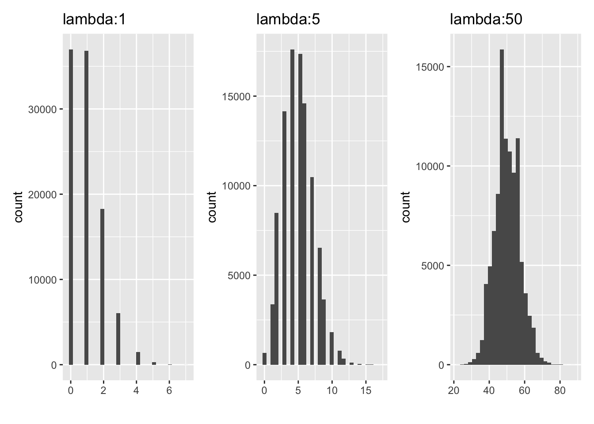
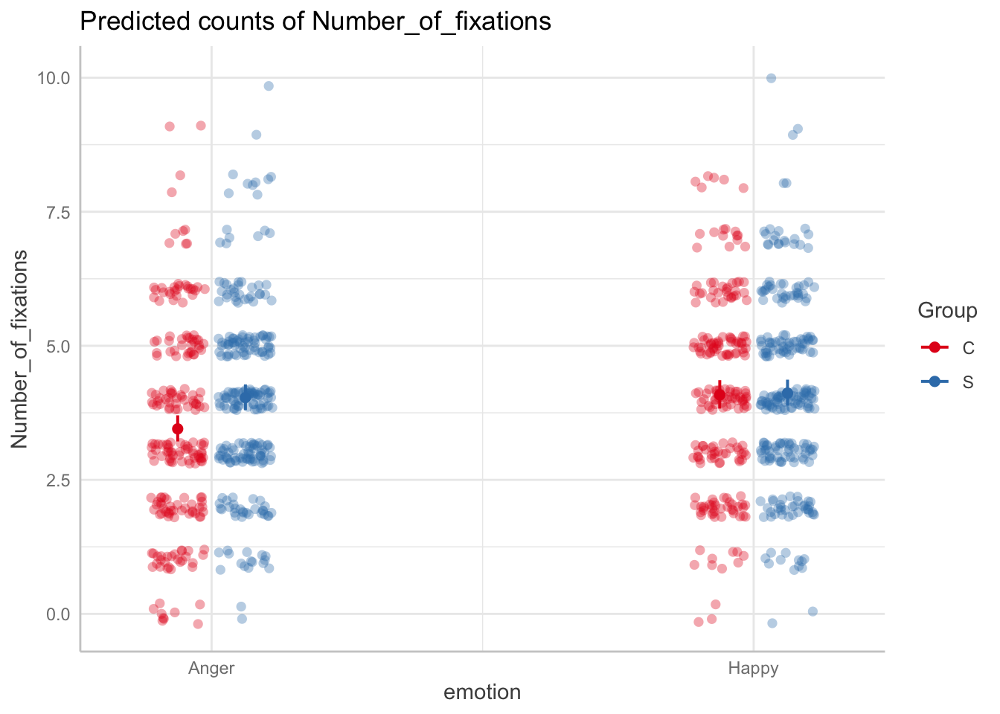

Attaching package: 'gridExtra'
The following object is masked from 'package:dplyr':
combine
library(pscl) # zip
Classes and Methods for R originally developed in the
Political Science Computational Laboratory
Department of Political Science
Stanford University (2002-2015),
by and under the direction of Simon Jackman.
hurdle and zeroinfl functions by Achim Zeileis.
library(glmmTMB) # zero inflated glmer
Warning in check_dep_version(dep_pkg = "TMB"): package version mismatch:
glmmTMB was built with TMB package version 1.9.15
Current TMB package version is 1.9.16
Please re-install glmmTMB from source or restore original 'TMB' package (see '?reinstalling' for more information)
\(E(Y) = Var(Y) = \lambda\) (just the mean number of events)
The distribution is typically skewed right, particularly if \(\lambda\) is small
The distribution becomes more symmetric as \(\lambda\) increases
If \(\lambda\) is sufficiently large, it can be approximated using a normal distribution
Poisson distribution
`stat_bin()` using `bins = 30`. Pick better value with `binwidth`.
`stat_bin()` using `bins = 30`. Pick better value with `binwidth`.
`stat_bin()` using `bins = 30`. Pick better value with `binwidth`.

Mean
Variance
lambda = 1
0.99351
0.9902178
lambda = 5
4.99367
4.9865798
lambda = 50
49.99288
49.8962683
Examples
The annual number of earthquakes registering at least 2.5 on the Richter Scale and having an epicenter within 40 miles of downtown Memphis follows a Poisson distribution with mean 6.5. What is the probability there will be 3 or fewer such earthquakes next year?
# regular glm model_glm <-glm(Number_of_fixations ~ emotion*Group, data = hh_data, family =poisson(link ="log")) # change family to poisson
glmer from the package lme4
# fit poisson model# change family to poisson# repeated measures poissonmodel1_cont <-glmer(Number_of_fixations ~ emotion+ Group + (1|ID), data = hh_data_contrast, family =poisson(link ="log")) # change family to poisson
Poisson regression: Fitting and interpretation
Coefficients represent log lambda or log mean counts
parameters::model_parameters(model1_cont, exponentiate =FALSE, effects="fixed") %>%kable(digits =3, format ="markdown")
Parameter
Coefficient
SE
CI
CI_low
CI_high
z
df_error
p
Effects
(Intercept)
1.352
0.035
0.95
1.283
1.420
38.761
Inf
0.000
fixed
emotion
-0.085
0.032
0.95
-0.148
-0.022
-2.648
Inf
0.008
fixed
Group
0.085
0.070
0.95
-0.051
0.222
1.228
Inf
0.220
fixed
Poisson regression: Fitting and interpretation
Mean counts = more interpretable
Poisson regression: Fitting and interpretation
Incidence rate ratios (IRR)
The IRR for a one-unit change in \(x_i\) is exp \((\beta)\)
The coefficient tells you how changes in X affect the rate at which Y occurs
Note
IRR > 1: Expected # events increases for 1 unit increase
IRR < 1: Expected # events decreases for 1 unit increase
IRR = 1: No difference in expected number of events for 1 unit increase
You are calculating adjusted predictions on the population-level (i.e.
`type = "fixed"`) for a *generalized* linear mixed model.
This may produce biased estimates due to Jensen's inequality. Consider
setting `bias_correction = TRUE` to correct for this bias.
See also the documentation of the `bias_correction` argument.
Some of the focal terms are of type `character`. This may lead to
unexpected results. It is recommended to convert these variables to
factors before fitting the model.
The following variables are of type character: `emotion`, `Group`

Model comparison: Poisson or Neg Binom?
Can test poisson vs. negative binomial with LRT because they are nested
test_likelihoodratio(model2, m.nb_c) %>%kable()
Some of the nested models seem to be identical and probably only vary in
their random effects.
partR2::partR2(model1_cont,data=hh_data, partvars =c("Group", "emotion"),R2_type ="marginal", nboot =10, CI =0.95)
boundary (singular) fit: see help('isSingular')
An observational level random-effect has been fitted
to account for overdispersion.
boundary (singular) fit: see help('isSingular')
boundary (singular) fit: see help('isSingular')
boundary (singular) fit: see help('isSingular')
boundary (singular) fit: see help('isSingular')
boundary (singular) fit: see help('isSingular')
boundary (singular) fit: see help('isSingular')
R2 (marginal) and 95% CI for the full model:
R2 CI_lower CI_upper nboot ndf
0.014 0.0048 0.0407 10 3
----------
Part (semi-partial) R2:
Predictor(s) R2 CI_lower CI_upper nboot ndf
Model 0.014 0.0048 0.0407 10 3
Group 0.007 0.0000 0.0341 10 2
emotion 0.007 0.0000 0.0340 10 2
Group+emotion 0.014 0.0048 0.0407 10 1
State your hypothesis, statistical test, its link function, and justify the use of Poisson/neg binomial
In text, report mean counts/marginal effects
Report log \(\lambda\), SE, 95 CIs, p-values, IRR, effect size
Important
We fitted a poisson mixed model (estimated using ML and Nelder-Mead optimizer)
to predict Number_of_fixations with emotion and Group (formula:
Number_of_fixations ~ emotion * Group). The model included ID as random effect
(formula: ~1 | ID). The model's total explanatory power is moderate
(conditional R2 = 0.13) and the part related to the fixed effects alone
(marginal R2) is of 0.02. The model's intercept, corresponding to emotion = 0
and Group = 0, is at 1.35 (95% CI [1.28, 1.42], p < .001). Within this model:
- The effect of emotion is statistically significant and negative (beta =
-0.09, 95% CI [-0.16, -0.03], p = 0.003; Std. beta = -0.04, 95% CI [-0.08,
-0.01])
- The effect of Group is statistically non-significant and positive (beta =
0.09, 95% CI [-0.05, 0.23], p = 0.202; Std. beta = 0.04, 95% CI [-0.02, 0.11])
- The effect of emotion × Group is statistically significant and positive (beta
= 0.15, 95% CI [0.02, 0.27], p = 0.023; Std. beta = 0.04, 95% CI [5.19e-03,
0.07])
Standardized parameters were obtained by fitting the model on a standardized
version of the dataset. 95% Confidence Intervals (CIs) and p-values were
computed using a Wald z-distribution approximation.
Zero-inflated Models
Zero-inflation
Too many zeros can bias your results
Overdispersion
Problematic for negative binomial model as well
Assumes 0s are part of the same process (but might not be)
Warning in log(1 - phi): NaNs produced
Warning in log(1 - phi): NaNs produced
Warning in log(1 - phi): NaNs produced
Warning in log(1 - phi): NaNs produced
Warning in value[[3L]](cond): Lapack routine dgesv: system is exactly singular:
U[9,9] = 0FALSE
# glmmTBmodel_zip_glmer <-glmmTMB(Number_of_fixations ~ emotion*Group +(1|ID), data = hh_data_contrast,ziformula =~1, #estimate zero inflated # add variables herefamily = nbinom2) # nbinom2 fits variance with quadartic component like eq we talked about mu^2/phi
Warning in finalizeTMB(TMBStruc, obj, fit, h, data.tmb.old): Model convergence
problem; false convergence (8). See vignette('troubleshooting'),
help('diagnose')